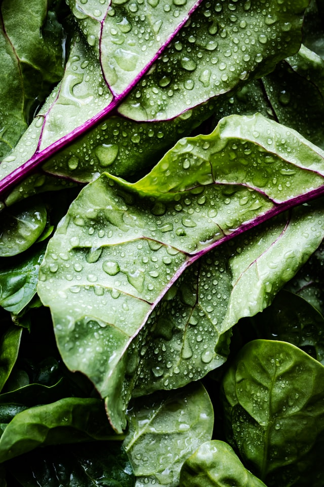
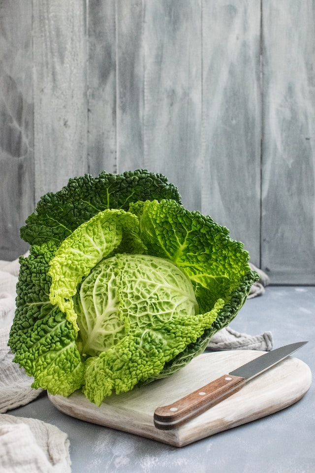
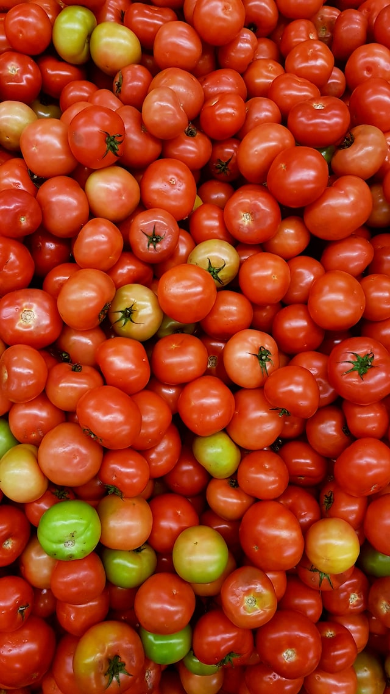
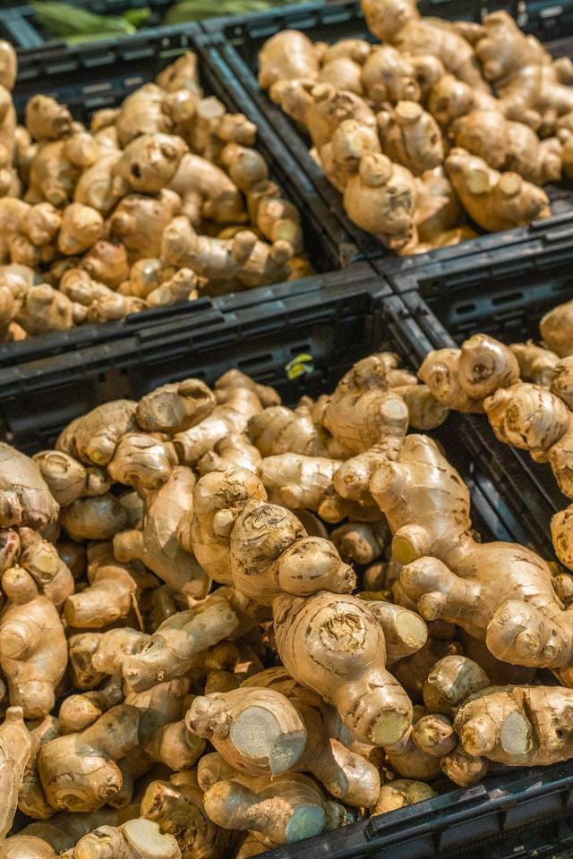
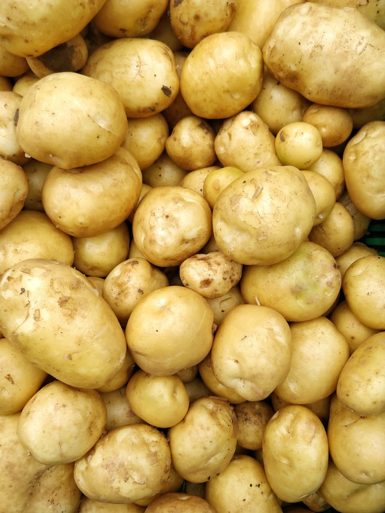

-
.jpg)
La zanahoria es uno de los alimentos más saludables y que, afortunadamente se consume de forma habitual. Dos de sus propiedades más conocidas es el fortalecimiento de la piel y la mejora de la salud ocular. Pero, aparte, tiene otras ventajas que convierten a este vegetal en uno de los mejores desde un punto de vista nutricional.
$2.500

.jpg)
La cebolla contiene azúcar natural, vitaminas A, B6, C y E. También minerales como el sodio, potasio, hierro y fibra alimentaria. Además son un buena fuente de ácido fólico. 100 gramos de cebolla contienen 44 calorías y 1,4 gramos de fibra
$1.500
La espinaca es una fuente excelente de vitaminas K, A, C y ácido fólico. También es rica en manganeso, magnesio, hierro y vitamina B2. La vitamina K es importante para la salud de los huesos y es difícil encontrar vegetales con más vitamina K que la espinaca. También son especialmente importantes para la salud visual
$1.000
.jpg)
Al igual que la vitamina C, tiene acción antioxidante, y ésta última además interviene en la formación de colágeno, glóbulos rojos, huesos y dientes, favorece la absorción del hierro y aumenta la resistencia frente las infecciones
$1.800
Sin embargo, es preciso tener en cuenta que las hojas de color verde intenso, que por lo general suelen ser las menos tiernas, son precisamente las más ricas en vitaminas y minerales. Contiene flavonoides, fundamentalmente quercetina; seguida de kaempferol, y cantidades inferiores de miricetina, luteolina y apigenina.La lechuga también aporta pequeñas cantidades de b-sitosterol, stigmasterol y campesterol, fitoesteroles que participan en importantes funciones biológicas del organismo.
$4.000
El tomate es considerado una fruta a pesar de que normalmente es utilizado como un vegetal en las ensaladas y en las preparaciones de algunos platos culinarios. Su nombre científico es Lycopersicum esculentum L y es una fruta rica en vitamina C, A, K, potasio y licopeno, un potente antioxidante.
$2.000
También se utiliza para los vértigos, náuseas y mareos de viaje, trastornos circulatorios y del riego sanguíneo, dolores y espasmos musculares, así como para los trastornos gástricos y digestivos. Desde la Antigüedad, el jengibre también se considera un afrodisíaco.
$1.000
Los beneficios de la patata son numerosos. Es un alimento rico en carbohidratos, por lo que nos aporta mucha energía. Además, un 75% de su contenido es agua y es una gran fuente de potasio. Asimismo, es rica en vitamina C, vitamina B, ácido fólico y minerales como el magnesio y el hierro
3.000